Valus el primer coloso BIPEDO al cual enfrentamos, este sirve como modo tutorial. La forma de derrotarlo es bastante fácil, ya que este no es muy agresivo, así que no deberías tener problemas para seguir la estrategia, que consiste en escalar por su pierna izquierda, la cual tiene una de las primeras zonas iluminadas como punto débil. Atácale ahí hasta que ya no puedas más.
Ahora asciende por la espalda y descansa en la plataforma de piedra para recuperar resistencia. Después, sube a lo alto de su cabeza y no olvides agarrarte bien porque empezará a sacudirse en cuanto note tu presencia. Ve haciéndole daño clavando la espada y descansando si lo necesitas. Si te caes, repite el proceso de escalada y procede de nuevo hasta que agotes toda su vitalidad.
-Enigma: "Eleva tu espada por la luz y la cabeza hacia el lugar donde la luz de la espada se reúne... Allí, hallarás el punto débil del coloso para derrotarlo... Ahora, está en tu camino."
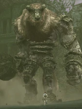Quadratus es el primer coloso CUADRUPEDO al cual nos enfrentamos. Mantén las distancias. Si te acercas puede pisotearte y te hará bastante daño. Sea como sea, ten en cuenta que necesitarás sacar tu arco. Si levantas tu espada podrás localizar sus puntos débiles que se encuentran justo en la parte inferior de sus pezuñas. La idea es que cuando levante una de las mismas le dispares una flecha justo ahí.
Al acertar el tiro provocarás que se caiga y de esta forma podrás saltar al pelaje de su lomo para escalarlo. Hazlo rápido antes de que vuelva a ponerse en pie. Una vez encima de él recorre su espina dorsal y ve hacia la parte de la cabeza. Ten cuidado con sus movimientos bruscos para no caerte y machaca su punto débil mientras recobras resistencia si te hace falta.
-Enigma: "Tu próximo enemigo es... En la cueva junto al mar que se mueve lentamente... Eleva tu coraje para vencerlo."
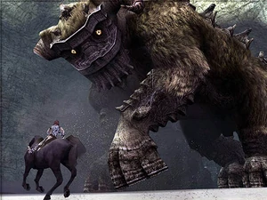Gaius es uno de los colosos más grandes (aunque no el que más), y notarás enseguida que este sí es más agresivo que los otros. Aunque su tamaño pueda echarte para atrás, en realidad gracias a esto mismo podrás predecir bastante sus lentos movimientos. La estrategia a seguir es irte primero hacia la plataforma circular del centro del escenario. Una vez ahí, espera a que Gaius levante su enorme brazo y apártate rápido.
Si lo haces bien, el coloso quedará aturdido y se le agrietará parte de su armadura, dejando al descubierto pelaje en el brazo. Ahora haz que vuelva a atacarte y en cuando clave la herramienta en el suelo de tierra sube por ella hacia su pelaje, para agarrarte y escalarlo progresivamente. La escalada es más complicada que las otras, pero con cuidado irás llegando a sus zonas de "descanso" y al punto débil que se encuentra en lo alto de la cabeza. Procura no salir volando y no te apresures, la paciencia es tu mayor aliada con él.
-Enigma: "Tu próximo enemigo es... Dentro de la niebla... Un pabellón gigante se eleva a los cielos... La ira del gigante dormido rompe la tierra."
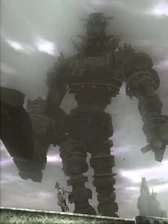Este coloso tiene forma de caballo. La criatura en sí no es muy difícil, y es menos agresiva que el tercero, aunque no te confíes. La complicación la supone subirse a él, ya que será seguramente el primero de la aventura que requiere que pienses un poco más que con los otros. Si eres un jugador impaciente probablemente te frustrarás por intentar llegar a su cuerpo. Es complejo subirse por los métodos convencionales, aunque algunos jugadores hábiles son capaces de llegar a alguna de sus repisas saltando desde Agro justo en el momento indicado.
Pero desde luego no es lo más recomendable porque te complicarás la vida. Lo que debes hacer es aprovecharte del escenario. ¿Recuerdas las cuevas que hemos mencionado que hay en el lugar? La mecánica consiste en que te metas por una de ellas y llames la atención de Phaedra. Puedes hacerlo silbando o disparándole un par de flechas. Cuando el coloso se acerque, tienes dos alternativas.
-Enigma: "Tu próximo enemigo es... En la tierra de los campos verdes... un gran orientador de filas de tumbas... es un gigante de verdad... Pero temeroso, no es."
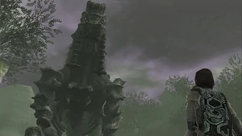Avion es un coloso impactante la primera vez que lo ves, y su nombre hace honor al combate que te espera, porque te va a llevar volando por los aires. Aunque primero necesitarás que se acerque. Para ello puedes ir a cualquiera de los tres pedestales que verás sobresalir un poco por encima del agua. Sitúate en uno de ellos y dispara flechas a Avion para provocarle. En cuanto veas que se empieza a mover hacia ti no lo pierdas de vista. Su intención será embestirte, pero no te asustes y mantén la posición. Cuando esté muy cerca tendrás que saltar en el momento justo para agarrarte a una de sus alas, ya que estas tienen pelaje.
Si no consigues subirte a él, repite el proceso hasta que lo logres. Una vez encima, te espera un viaje movido. No bajes la guardia y fíjate siempre en tu resistencia. Lo difícil es no perderla, ya que solo podrás descansar en momentos determinados. Sus puntos débiles están en las alas y la cola, que deberías dejar para el final. Lo suyo es que te muevas poco a poco cuando estés totalmente seguro y el coloso no vuele bruscamente. Es mejor no caerse para no repetir toda la secuencia. A estas alturas se recomienda haber cazado ya unas cuantas lagartijas que aumenten tu barra de resistencia para tener menos problemas.
-Enigma: "Tu próximo enemigo proyecta una sombra colosal a través de un lago brumoso... A medida que se eleva por el cielo... Para llegar hasta él no es tarea fácil."
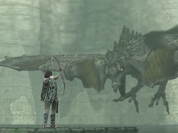Barba presenta un aspecto un tanto similar al primer coloso del juego, y seguramente te resulte bastante fácil a estas alturas, aunque como es habitual al principio puede ser un poco lío descubrir cómo escalarlo (y ten presente que es agresivo). Precisamente la mejor pista es su nombre, fíjate en su gran barba. Hay que hacer que se agache para que el pelo toque el suelo. ¿Cómo hacerlo? Supera las murallas del escenario mientras él te sigue derribándolas. Al fondo de este lugar encontrarás un hueco con columnas en el que meterte. Ahora llama la atención de Barba.
Cuando se acerque bajará la cabeza y será el momento de saltar a su barba para escalarlo rápidamente. Puedes descansar en sus hombros. Tiene un punto débil en la cabeza y otro en la espalda, al que puedes llegar más fácil si te dejas caer y te agarras a su pelo. Tiene mucho pelaje, así que no debería ser complicado.
-Enigma: "Tu próximo enemigo es... Un gigante que se esconde debajo del templo... Su deseo es la destrucción... Pero, un tonto no es."
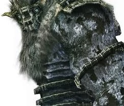Hydrus es especie de anguila eléctrica gigante o siluro que se sumerge en las aguas. Sí, estamos ante un combate medio acuático. Nada por el lago e intenta colocarte sobre su posición, fijándote en sus luces. Espera a que aparezca en la superficie y si estás lo suficientemente cerca podrás agarrarte al pelaje de su cola cuando emerja. El coloso volverá a las profundidades, ahora no te sueltes ni te muevas y presta atención a tu barra de oxígeno. Resiste hasta que salga de nuevo a la superficie para recuperar el aire y la resistencia. Será el momento de avanzar hacia sus espinas dorsales, son las que emiten luz y tiene tres.
Lo bueno es que Hydrus es casi inofensivo. Solo ten cuidado cuando estas espinas entren en contacto con el agua, porque emitirán electricidad que podría dañarte. Sus puntos débiles se encuentran justo al lado de estas espinas. Ve progresando poco a poco. Al conseguir apagar las espinas, aparecerá un último punto débil en su cabeza. Ya sabes lo que tienes que hacer, tendrás que ir a él para apuñalarlo y acabar definitivamente con Hydrus.
-Enigma: "Tu enemigo próximo enemigo es... Una ruina escondida en el lago... Una oleada de truenos se esconde bajo el agua."
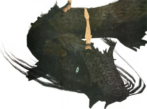Kuromori se trata de una especie de lagartija que escala las paredes. Estamos ante el coloso más pequeño al que te has enfrentado hasta ahora, pero no por ello este combate es moco de pavo. Es bastante rápido y muy agresivo, ya que ataca con nubes de ácido que quedan en el aire y también con su cola. Acercarse a él no es viable.
Tendrás que usar el escenario a tu favor. Baja unos pisos hasta llegar a una abertura en la pared de roca desde la que puedes saltar al escenario del suelo, donde está él, pero no lo hagas todavía. Atrae su atención para que escale la pared. Ahora muévete buscando un buen ángulo desde el que puedas dispararle a sus patas. Si le aciertas verás que las despega de la pared. Necesitarás hacerles daño a dos rápidamente para que pierda agarre y se precipite al suelo (cuanto más alta sea la caída, más tiempo estará aturdido).
Al caer quedará boca arriba y desvelará su punto débil, el cual se encuentra en su vientre. Ve rápidamente al patio y súbete a él para apuñalar esa zona. Después de eso volverá a la carga y tendrás que repetir la fórmula, ya que cara a cara no tienes nada que hacer. Si lo haces bien, puede que solo necesites un intento más para bajarle toda la vida.
-Enigma: "Tu próximo enemigo es... una cola atrapada dentro de un cubo, en lo profundo de la selva... una sombra que se arrastra en las paredes."
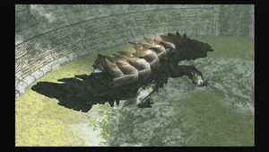Este es el primer combate en el que Agro se vuelve realmente vital para no tener problemas. Basaran posiblemente sea el más fuerte de los colosos que has visto hasta ahora. Parece imbatible al principio, y tiene dos tipos de ataques: unas bolas de fuego que lanza a distancia, y un gran pisotón que hace temblar el suelo. Estamos ante un combate que puede tornarse largo y tedioso porque necesitarás parte de suerte de tu lado. La clave está en los géiseres del escenario, ya que necesitas que Basaran se coloque encima de uno para que el chorro de agua le haga perder equilibrio y así puedas tumbarlo para subirte a él.
Es mejor que mantengas las distancias montado en Agro y le dispares para que se fije en ti y camine poco a poco hacia uno de los géiseres. Si lo consigues en el momento oportuno, el chorro de agua lo desequilibrará, haciendo que levante dos patas. En ese momento cabalga rápido hacia él y dispara flechas a la planta de sus patas.
Al acertarle provocarás que definitivamente pierda equilibrio, ruede y caiga de lado. Ahora aprisa aproxímate y salta desde Agro a su estómago. Agárrate a su pelaje y escala hacia su caparazón hasta que recupere su posición inicial, procura no caer cuando haga el giro para no repetir el proceso (aunque si caes, solo tendrás que repetir la parte del géiser). Una vez encima de él dirígete a su cabeza, donde está su gran punto débil. El caparazón no tiene pelaje, pero no debería costarte mantenerte ahí gracias a sus irregularidades. La cabeza, por suerte, sí tiene. Ya sabes lo que toca.
-Enigma: "Tu próximo enemigo es... En la tierra de la tierra ennegrecida, donde los árboles no crecen... Se duerme un lecho de lago seco... Un rudo despertar."
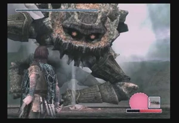Sí, Dirge es una especie de serpiente o gusano de arena que se esconde dentro del terreno y aprovecha esto mismo para perseguirte a una gran velocidad. Agro vuelve a tornarse vital en este combate. Lo necesitarás para cabalgar a toda prisa evitando el ataque de Dirge. No te lo tomes a la ligera, el ataque de Dirge es muy dañino. Este combate puede ser complejo si no eres muy diestro a la hora de cabalgar y disparar tu arco mientras lo haces, debido a que lo que hay que hacer para revelar los puntos débiles de Dirge es acertarle en sus ojos con una flecha. Para ello, comete la insensatez de cabalgar al frente del coloso, mientras este te persigue.
-No bajes a la arena porque te machacará.
-Debes tener cuidado de que Agro no se tropiece con alguna roca o pared de la caverna, aunque lo bueno es que el caballo puede cabalgar sin que lo espolees todo el rato.
-Espera a que Dirge asome su cabeza y aciértale un flechazo en los ojos (ni siquiera tienes que tensar el arco por completo).
Al hacerle daño Dirge perderá el control e irá a estrellarse contra alguna pared, saliendo a la superficie. Cabalga rápido hacia él y súbete a su cuerpo para buscar los puntos débiles. Son muy grandes, uno cerca de la cola y otro cerca de la cabeza. Aunque no podrás dañar los dos de una sola vez, por lo que prepárate para repetir la estrategia.
-Enigma: "Tu siguiente enemigo es ... una duna solitaria ... Las pistas están bien escondidas ... sacudiendo la tierra, su mirada se posa en ti."
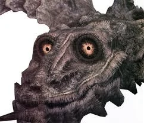Celosia es el coloso más pequeño del juego y tiene el aspecto de un perro, un gato, o un león, lo que prefieras. El mayor riesgo que corres es que es bastante rápido y sus ataques pueden dañarte considerablemente. Además, no podrás saltar sobre él así de buenas a primeras. No obstante, tiene una estrategia muy concreta. Fíjate que en la zona del combate hay unos grandes pilares con antorchas de fuego. Sube rápidamente a uno de ellos y espera a que Celosia embista el pilar. De esta forma se caerá el palo de una antorcha. Baja a recogerlo y sube de vuelta para prenderle fuego.
Celosia le tiene miedo al fuego. Así que con la antorcha en tus manos agítala delante de él para que poco a poco se vaya alejando de ti (si te pegas mucho a él te puede dar zarpazos). Llévalo hacia la zona que da al exterior del templo. Al alcanzar el borde tropezará y se caerá por el barranco, rompiendo la coraza de su espalda y dejando a la vista su punto débil. Te tocará subirte a su espalda para apuñalarlo con tu espada. Aunque Celosia se revuelve muchísimo, agárrate bien. Si ya has encontrado varios lagartos en tu viaje que aumenten tu resistencia, esta parte debería resultarte más fácil. No desistas hasta bajarle toda la barra de vida.
-Enigma: "Tu próximo enemigo es... Un altar con vistas al lago... Un tutor desatado... Se mantiene la llama viva."
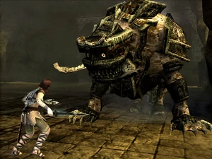Pelagia es un poco más complicado que los últimos colosos, y además constantemente te disparará unos rayos desde sus cuernos si te tiene a la vista, así que cuidado con ellos. Tendrás que estar en movimiento u ocultarte detrás de las plataformas del escenario. La idea principal para subirse a él es aprovechar la parte musgosa de su espalda. Como es bastante lento no debería costarte demasiado rodearlo a nado para subir por ahí. De esta forma puedes escalar hacia su cabeza, coronada por una especie de "dientes" o muelas. Si los golpeas podrás cambiar la dirección de sus movimientos.
Tu objetivo es llevar al enorme coloso a una de las plataformas de roca del escenario para poder saltar hacia ellas. Cuando estés lo suficientemente cerca hazlo y cúbrete detrás de la pieza circular del centro. Tras un rato, Pelagia se impulsará y colocará sus patas delanteras sobre la plataforma. En ese momento debes aprovechar para saltar hacia su estómago, pues es ahí donde está su punto débil. Clava tu espada hasta que el coloso rompa la plataforma de roca. Ahora te tocará repetir el proceso hacia otra plataforma para bajarle toda la vida.
-Enigma: "Tu próximo enemigo es... un paraíso que flota sobre el lago... Un ser silencioso que maneja el trueno... Un puente que se traslada en un terreno más alto."
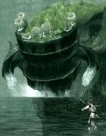Phalanx protagoniza uno de los combates más espectaculares del juego, no en vano se trata de uno de los colosos más grandes y con un diseño imponente, con forma de serpiente voladora. Su estrategia es un poco más elaborada que la media, pero no te preocupes. Lo primero de todo es fijarse en unas grandes bolsas blancas que es capaz de inflar bajo su cuerpo, las cuales le hacen ascender hacia los cielos. Debido a esto es imposible llegar a él, por lo que tendrás que hacer que descienda. Para ello mantente montado en tu fiel Agro y persíguelo por el desierto mientras le disparas flechas a los sacos.
Cuando aciertes tus disparos lograrás que Phalanx descienda. Aun así, seguirá sobrevolando las arenas a gran velocidad y solo podrás alcanzarlo con Agro. Verás que sus aletas ahora van rozando la arena, así que dirígete hacia la que tengas más cerca para poder saltar desde tu caballo a sus asideros (ten en cuenta que si tardas mucho volverá a inflar las bolsas y habrá que repetir la operación). Una vez logres agarrarte a tiempo tendrás que esperar a que Phalanx vuelva a elevarse colocando sus alas en horizontal, de manera que tú puedas saltar a su cuerpo central, donde tiene pelaje. Aquí encontrarás sus tres puntos débiles a lo largo del cuerpo, son fáciles de localizar.
Ya sabes lo que toca, hacerle daño hasta acabar con él. Durante el proceso, tras acabar con alguno de sus puntos Phalanx volará bruscamente, procura no caer (la caída podría matarte). Además, después se sumergirá en la arena, obligándote a volver a subir a Agro y repetir la mecánica de explotarle sus sacos para subir de nuevo.
-Enigma: "Tu próximo enemigo es... Las tierras vastas del desierto... Una pista gigante se desplaza en el cielo... tú no estarás solo."
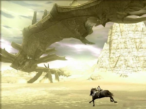Después de los altos vuelos que ofreció Phalanx, Cenobia te parecerá poca cosa, pero no hay que subestimar a este coloso de forma felina, pues ataca con la ferocidad de un toro bravo y en un cara a cara con él estás perdido (algo semejante a Celosia). La clave es mantener las distancias y usar el escenario a tu favor. Fíjate que por la zona hay múltiples pilares circulares de piedra. Busca por el lugar con hierba uno que estará derruido en el suelo. Desde él puedes subir y saltar a unas plataformas horizontales para llegar a otro pilar, este sin estar derrumbado.
Escala hasta arriba del todo y ahora asegúrate de que Cenobia te sigue y dispárale unas flechas para enfurecerlo. El coloso terminará por embestir el pilar en el que te encuentras, tirándolo al suelo. Así desbloquearás el acceso a otros pilares. Tu cometido es ir de uno a otro mientras Cenobia los embiste y tira abajo.
Acabarás llegando a uno que, cuando sea derribado, romperá un muro de piedra y podrás alcanzar una zona antes bloqueada. Desde ahí tu objetivo es escalar por la pared cercana para subir a esta plataforma que está sostenida por una viga de piedra. Vuelve a enfurecer a Cenobia para que destruya el soporte y la plataforma se le caiga encima, rompiendo su armadura y dejando al descubierto su punto débil. Ahora que tiene el punto débil al aire, no dudes en saltarte a su espalda para apuñalarlo con tu espada. Desde algún pilar o zona elevada no deberías tener problemas para hacerlo. Como siempre, ten cuidado de sus bruscos movimientos y agárrate bien hasta bajarle toda la vida.
-Enigma: "Tu próximo enemigo es... Un tutor desencadenado... Más allá de la ciudad cerrada... Su deseo es la destrucción."
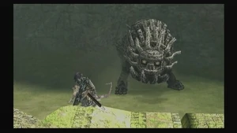Argus tiene una forma bípeda y parece una versión potenciada de otros colosos similares a él que ya has enfrentado. Es realmente grande y tiene una agresividad superior, por ejemplo, ataca con un gran pisotón. Este movimiento será el que debas aprovechar inicialmente para avanzar. Muévete hacia uno de los laterales del escenario. Verás que hay salientes, como una especie de gradas, a los que podrías agarrarte, pero no alcanzas de forma natural. Quédate ahí hasta que Argus te ataque con su pisotón. Al hacerlo el gran peso de su pata inclinará la plataforma de piedra del suelo permitiéndote llegar al saliente de un salto.
Ahora camina por detrás de las columnas y atrae la atención de Argus con flechas. El coloso se preparará para golpearte. Esquívale a tiempo y su golpe derrumbará parte del escenario, lo que te dará acceso al siguiente nivel de las gradas. Desde ahí puedes subir por unas escaleras y llegar a uno de los puentes que conectan ambos lados de las ruinas. Vuelve a disparar flechas a Argus para enfurecerlo. Terminará por golpear y destruir el puente. Asegúrate de alejarte para no sufrir daños o una caída inesperada. Tras esto, Argus se aproximará más hacia ti, lo que te permitirá saltar desde el extremo del puente hacia su cabeza. Es un salto complicado, así que hazlo solo cuando estés seguro de que llegarás a él (si caes en algún momento, ya sabes, te tocará repetir la operación de escalada).
Ahora toca encontrar sus puntos débiles. Obviamente el primero está en su cabeza. Machácalo y después de atacar esta ve descendiendo por su hombro hacia su codo derecho. Ahí tiene una herida. Al apuñalarla harás que suelte su arma y volverás al suelo de la arena. Su último punto débil se encuentra en la palma de esta mano derecha. Dispárale para que ejecute un ataque con el puño. Esquívalo y antes de que vuelva a subir su mano agárrate a ella para poder apuñalarla con tu espada hasta que el coloso caiga para siempre.
-Enigma: "Vuestro siguiente rival es... un gigante ha caído en el valle actúa como un centinela de una ciudad destruida."
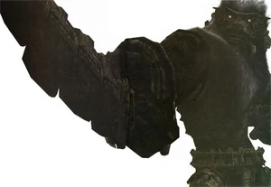Por supuesto, Malus es el coloso más grande de todos. Un rascacielos imponente desde la lejanía que lanza rayos y te impide acercarte directamente. Sin embargo tienes una ventaja, y es que no se mueve, así que podrás hacer uso de las barricadas del terreno y otros obstáculos para avanzar sin exponerte demasiado. Calcula los tiempos de sus ataques utilizando los parapetos y progresa poco a poco.
El camino para seguir no tiene mucha pérdida, deberás introducirte por pasadizos subterráneos y salir hasta zonas abiertas hasta alcanzar la base del coloso. Escalarlo supone una mezcla de rompecabezas y plataformas. Tu objetivo inicial es subir por sus superficies rocosas que van girando. La escalada es lenta y larga, pero acabarás llegando a una parte de su espalda donde tiene un punto débil. Clava ahí tu espada y el coloso reaccionará llevando su mano izquierda hacia ti. Aprovéchalo para saltar a su palma con pelaje. Malus elevará este brazo y será entonces cuando debas esperar el momento justo para recorrer su antebrazo y llegar a un punto débil antes del hombro, cerca del fuego.
Cuidado con sus movimientos, no querrás caerte desde esta altura. Cuando ataques este punto, Malus aproximará su otra mano, la derecha. Haz lo mismo que antes y agárrate a esta para ser llevado hacia el otro lado. Ahora trata de colocarte en el reverso de su palma cuando este la ponga en horizontal (y descansa si te hace falta). Desde aquí tendrás a la vista un punto débil en su hombro izquierdo. Apúntale y dispara una flecha para dañarlo y que así lleve su mano derecha hacia esa posición. Salta hacia el hombro y ya te encontrarás en lo más alto del coloso. Imaginarse lo que falta es fácil, escala a su cabeza y apuñala el punto débil más vital de Malus hasta hacer que perezca de una vez por todas.
Enigma: "Por último, el coloso pasado... El ritual es casi más... tu deseo es concedido casi... Pero alguien se ubica actualmente en ponerse en tu camino... daros prisa, por que el tiempo es corto."
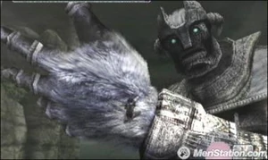 anda a picotear